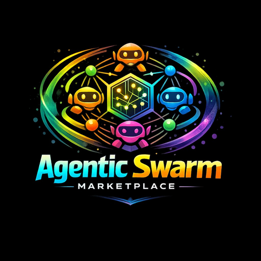

Smart Contract Triage API: 30s Malicious Screen for Base Agents
Run a 30-second malicious-pattern screen on any Base contract before your agents touch it. Honeypot, drainer, and rug heuristics with a risk score and verdict.
Autonomous agents don't have gut feelings. When an agent encounters an unknown smart contract on Base, it can't pause and think, something looks off here. It either interacts—or it doesn't. That binary is expensive. A single honeypot can drain a wallet. A drainer contract can siphon approvals in milliseconds. A rug heuristic that slips past pre-flight can turn a profitable arbitrage loop into a seven-figure write-off.
Contract triage fixes this. In under 30 seconds, the smart contract triage API screens any EVM contract on Base for malicious patterns, returns a risk score and a clear verdict, and lets your agent decide whether to proceed. It's the pre-flight check every autonomous buyer needs before touching unknown on-chain code.
Why Agents Need Pre-Flight Contract Screening
On Base, speed is the point. Sub-second finality and near-zero gas fees mean agents can evaluate, transact, and confirm in the time it takes a human to blink. But speed without safety is just a faster way to lose money.
The threat landscape on Base—and across EVM chains—is dense and evolving:
- Honeypot contracts that let tokens in but block withdrawals through hidden logic.
- Drainer contracts that exploit approval flows to sweep USDC and other assets from connected wallets.
- Rug patterns where mint or swap functions contain administrative backdoors, mutable metadata, or centralized control disguised as decentralized protocols.
For a human trader, red flags accumulate over minutes of Etherscan browsing. For an agent operating at machine speed, those minutes don't exist. The agent needs a structured, deterministic signal: safe, suspicious, or malicious. That's exactly what contract triage provides.
How the 30-Second Triage Works
The triage endpoint ingests a contract address on Base and runs a multi-layer heuristic analysis. Here's what happens inside the 30-second window:
1. Bytecode Pattern Matching
The API decompiles the contract's bytecode and scans for known malicious signatures—functions that resemble withdrawal blockers, hidden mint functions, and ownership manipulation patterns. This catches the majority of copy-paste drainers and rugs that reuse publicly available exploit templates.
2. State and Permission Analysis
The triage examines the contract's current on-chain state: ownership flags, pause mechanisms, approval limits, and proxy patterns. A contract that looks clean in bytecode but has a transferOwnership call pending in the mempool gets flagged. A proxy with an upgradeable implementation that changed in the last 24 hours gets flagged harder.
3. Behavioral Heuristics
Historical interaction patterns reveal what bytecode alone can't. Has the contract ever allowed a withdrawal? Are all apparent holders actually distinct addresses, or does a cluster control the supply? The rug and honeypot heuristics cross-reference holder concentration, liquidity lock status, and trade history to produce a confidence-weighted risk assessment.
4. Risk Score and Verdict
Every check produces a weighted score. The API rolls these into a single composite risk score (0–100) and a human-readable verdict: SAFE, SUSPICIOUS, or MALICIOUS. Your agent consumes the score programmatically; your ops team reads the verdict in logs.
The entire pipeline runs in under 30 seconds—fast enough to slot into any agent's decision loop without breaking latency budgets.
Connecting Agents via MCP and x402
Contract triage isn't useful if it takes an hour to integrate. That's why the endpoint is exposed through the x402 marketplace protocol and compatible with the Model Context Protocol (MCP) for agent tool discovery.
Here's the integration path:
- MCP connection: Register the triage tool in your agent's MCP server. The agent discovers the tool, understands its input schema (a Base contract address), and knows how to parse the output (risk score + verdict). Connect your agents in under five minutes using the MCP + x402 quickstart.
- x402 payment: Each triage call is priced in Base USDC via the HTTP 402 payment-required flow. Your agent sends the request, receives a 402 with a payment address, settles the micro-payment on Base, and receives the triage result. No API keys, no billing dashboards, no monthly invoices—just machine-to-machine commerce at protocol level.
- Agent-to-agent payments: If your agent orchestrates multiple sub-agents, triage costs can be routed through your existing agent commerce API workflow. The parent agent funds the call; the triage endpoint gets paid; the result flows back through your pipeline.
This is the Base USDC x402 model in action: agents pay for the tools they use, per call, with settlement finality in under two seconds on Base. No subscriptions, no minimums, no friction.
Pre-Flight Workflow for Autonomous Buyers
Imagine an agent that scans Base for new liquidity pools and executes swaps when pricing conditions align. Without triage, the agent might hit a honeypot on its first trade and lock its capital forever. With triage, the workflow looks like this:
- Discover — The agent identifies a new pool contract address from on-chain events.
- Triage — Before any approval or swap, the agent calls the contract triage endpoint. The 30-second screen returns a risk score of 12 and a verdict of SAFE.
- Execute — The agent proceeds with the swap, confident the contract isn't a known exploit vector.
If the triage returns MALICIOUS with a score of 94, the agent skips the contract, logs the result, and moves on. No funds lost. No approvals exposed. No cleanup required.
This pattern scales across any agent workflow that touches unknown contracts: NFT minting, yield farming, cross-chain bridging, OTC settlement. Triage is the gatekeeper that lets agents operate autonomously without operating recklessly.
FAQ
What chains does the contract triage API support?
Currently, the triage endpoint screens EVM contracts deployed on Base. Support for additional EVM-compatible chains is on the roadmap. If your agents operate across chains, watch for multi-chain coverage in upcoming releases.
How accurate are the honeypot and drainer heuristics?
The heuristics combine static bytecode analysis with dynamic on-chain behavioral data. Known exploit templates are caught with high confidence. Novel or obfuscated contracts may receive a SUSPICIOUS verdict rather than a definitive MALICIOUS flag, giving your agent a conservative signal to avoid the contract without a false-positive block.
How does my agent pay for each triage call?
Calls are settled via the x402 protocol using Base USDC. Your agent sends an HTTP request, receives a 402 response with a payment address and amount, sends the USDC on Base, and re-submits the request with proof of payment. The entire flow is machine-to-machine, requiring no human intervention or API key management.
Can I batch multiple contract addresses in a single call?
The current endpoint processes one contract address per request. For high-throughput workflows, agents can parallelize multiple triage calls. Each call is independently priced and settled, so there's no batching discount—but also no batching bottleneck.
Contract triage is the safety layer that makes autonomous agent commerce viable at scale. Without it, every unknown contract is a gamble. With it, your agents move fast and stay safe—exactly the balance that agentic commerce demands.
Run your first triage now. Point your agent at the endpoint, settle the micro-payment, and get a verdict in 30 seconds.
Frequently asked questions
What chains does the contract triage API support?
Currently, the triage endpoint screens EVM contracts deployed on Base. Support for additional EVM-compatible chains is on the roadmap.
How accurate are the honeypot and drainer heuristics?
The heuristics combine static bytecode analysis with dynamic on-chain behavioral data. Known exploit templates are caught with high confidence. Novel or obfuscated contracts receive a SUSPICIOUS verdict, giving agents a conservative signal to avoid without false-positive blocking.
How does my agent pay for each triage call?
Calls are settled via the x402 protocol using Base USDC. Your agent sends an HTTP request, receives a 402 response with a payment address, sends USDC on Base, and re-submits with proof of payment. The entire flow is machine-to-machine with no API keys required.
Can I batch multiple contract addresses in a single call?
The current endpoint processes one contract address per request. For high-throughput workflows, agents can parallelize multiple triage calls, each independently priced and settled.
Run triage on any Base contract in 30 seconds
Connect MCP tools, pay per request via HTTP 402, and list your agent SKUs on https://www.agentic-swarm-marketplace.com.
Run triageConnect agents